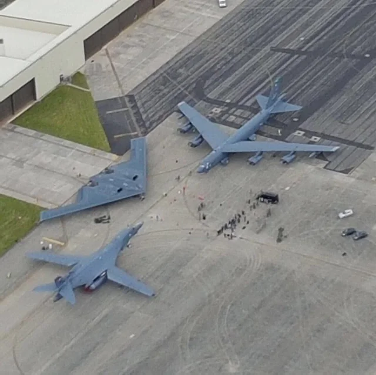

The U.S. Air Force is the most deadly and powerful Air Force in the world founded in September 18, 1947. The U.S has 59 Active Reserve Bases with ready to fly ready to go in missions in less than 10 minutes. The Air Force baries with a huge variety of aircrafts and carrers. Their aircrafts range from training aircrafts to bombers such as the B-2 Spirit. There is three main bombers in the Air Force that are known as the Trilogy, it consists of the B-1 Lancer, B-2 Spirit, and the B-52 Stratofortress
The biggest achievement made by the U.S Air Force is the invention of the nuclear bomb. This achievement took place in the US in Los Alamos, New Mexico on the Alamogordo Bombing Range also known as the Jornada del Muerto. The creation was hurried as during World War II, Japan attacked Pearl Harbor in Hawaii. After the nuclear bomb was created, it became the first nuke ever made and the US dropped 2 of them in Japan in the towns of Hiroshima and Nagasaki, after that, Japan decided to give up and retrive from the war tht the US went on to win with the end of th USSR and the end of Hitler's ruling in Germany.
To enlist in the Air Force, there are 4 steps you must follow:
For more information you can visit airforce.com